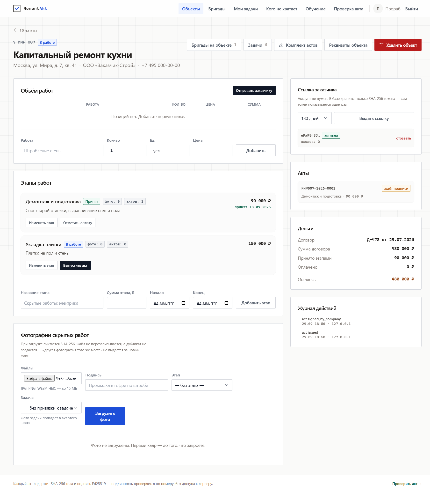

О проекте
RemontAkt - платформа для компаний и частных масетров, позволяющая контролировать выполнение работ

Как это устроено
Исполнитель ведёт объекты и этапы, рабочие отмечают выход в табеле, каждая фотография получает хэш SHA-256. Когда этап закрыт, из выполненных работ собирается тело акта, оно подписывается ключом Ed25519, а заказчик подписывает акт по ссылке с телефона.
На чём сделан
- Laravel 13 и PHP 8.4;
- MySQL, 28 таблиц предметной области;
- подписи — libsodium (Ed25519), хэши — SHA-256;
- 337 автотестов, все зелёные.
Роли в системе
Собственник видит деньги по договорам, прораб выпускает акты, рабочий отмечается в табеле, частный мастер ведёт объекты сам, а заказчик подписывает акт без аккаунта.